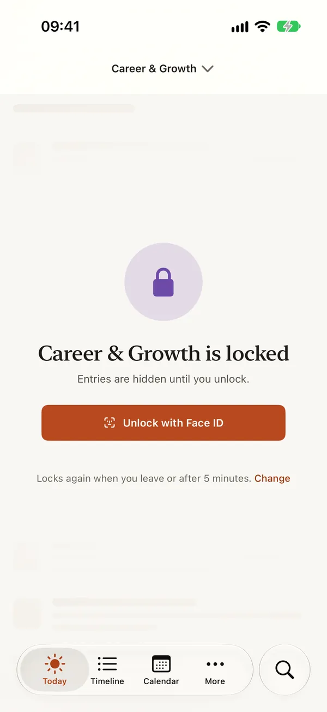
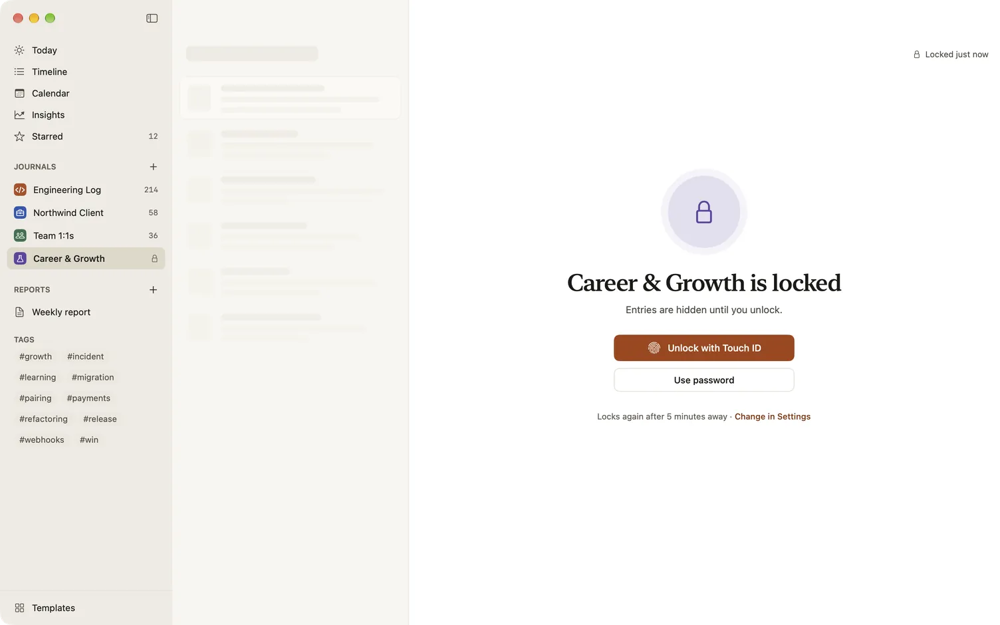

Locked journals and privacy
Some of what you write at work is sensitive: notes from 1:1s, feedback, career plans. You can lock any journal with Face ID or Touch ID, and while it’s locked, its entries don’t show anywhere in Dayfolio. Everything else about Dayfolio is private by default: there’s no account, your journals are stored on your devices and in your own iCloud, and Dayfolio collects nothing.
Lock a journal
- Open the journal’s settings: on a Mac, right-click the journal in the sidebar and choose Journal settings…; on iPhone and iPad, open the journal menu at the top and choose Journal settings….
- Under Privacy, switch on Lock with Face ID (or Lock with Touch ID, by what your device has).
The journal locks at once. Turning a lock off asks for Face ID, Touch ID or your password first.
When you make a journal for notes about people, such as one from the Management & Leadership pack or one that starts with 1:1 notes, Dayfolio asks once: “This journal holds notes about people. Lock it?” Lock turns on the lock; Not now leaves it as it is.
A device needs a passcode (on a Mac, a login password) to lock journals. Without one, Dayfolio says so instead of turning the lock on.
What the lock hides
While a journal is locked, its entries are left out of the journal list, the editor, Timeline, Calendar, Search, Insights, Reports and quick entry, and out of widgets, Spotlight and notifications. Its reminders say only “Time to write”. The list shows plain placeholders, never a blurred version of your text, and the sidebar shows a lock in place of the entry count.

Names that only a locked journal mentions, such as a person or a tag, are hidden too, from tag counts, people lists and Search, until you unlock.
Unlock and lock again
Choose Unlock with Face ID (or Touch ID). Your device’s passcode or your Mac’s login password works too. One unlock opens all your locked journals, in every window, and they lock again together:
- after the time you choose in Settings › Locked journals › Lock journals again: only when you leave Dayfolio, or after 1, 5 (the default), 15 or 60 minutes without use;
- whenever your screen locks or your Mac sleeps, and when Dayfolio quits;
- on iPhone and iPad, every time Dayfolio goes to the background;
- at once with Lock now, in the Dayfolio menu or the journal’s menu on a Mac.

Writing into a locked journal
Some quick ways to write can add an entry to a locked journal without opening it: Mac quick entry (⌥⌘J), dropping onto the journal in the sidebar, and the Share sheet on iPhone and iPad. The entry is saved and nothing of the journal is shown. Widgets, Siri, Shortcuts, Control Center and reminder replies never offer a journal you lock. See Quick capture.
More protections
Settings › Locked journals has more switches for what Dayfolio keeps to itself. Each is on until you turn it off, and while you have a locked journal, turning one off asks you to confirm with Face ID, Touch ID or your password:
- Keep entries out of Writing Tools, in every journal, so the editor doesn’t offer Apple’s Writing Tools, some of which can send text off your device.
- Skip spell-check in journals you lock.
- Show file icons instead of previews for attachments in journals you lock.
- Clear copied text when journals lock. Text copied from a locked journal is marked private, so clipboard managers skip it, and it’s taken off the clipboard when the journal locks again. On iPhone and iPad it also stays on that device and comes off the clipboard after five minutes.
- On a Mac, Hide the window from screen recording; on iPhone and iPad, journals you lock are hidden while the screen is recorded or mirrored.
- Asking for Face ID or Touch ID before turning on iCloud sync.
What the lock is, and isn’t
The lock controls what Dayfolio shows. It isn’t a separate layer of encryption. On your devices, your journals are protected by the device itself: FileVault on a Mac, and on iPhone and iPad, files in journals you lock can’t be read while the device is locked. In iCloud, everything is stored encrypted, and with Advanced Data Protection turned on for your Apple Account, it’s end-to-end encrypted, so only your devices can read it. See Sync and iCloud.
Exports and archives aren’t encrypted. Exporting a locked journal asks for Face ID or Touch ID first, and the Mac’s mirror folder never includes a journal you lock. See Import, export and backups.
Privacy settings
Settings › Privacy holds the permissions Dayfolio uses, each with what it’s for:
- Location, for the place and weather of new entries in journals that capture them. A new journal doesn’t.
- Calendars, for Fill from calendar… and Suggest notes after meetings. Dayfolio reads your calendar on the device and never sends it anywhere.
- Show entries in Spotlight, on iPhone and iPad, off until you turn it on. Journals you lock, archived journals and Recently deleted are never included.
The on-device summary in reports and Log in Dayfolio use Apple Intelligence on your device. Nothing you write is sent to Dayfolio, because there’s no Dayfolio server. The details are in the privacy policy.
What’s free
Locking journals and every privacy setting are free.
Related
- Sync and iCloud
- Quick capture
- Reports
- Templates for notes worth locking: 1:1 notes, Skip-level notes, Feedback given